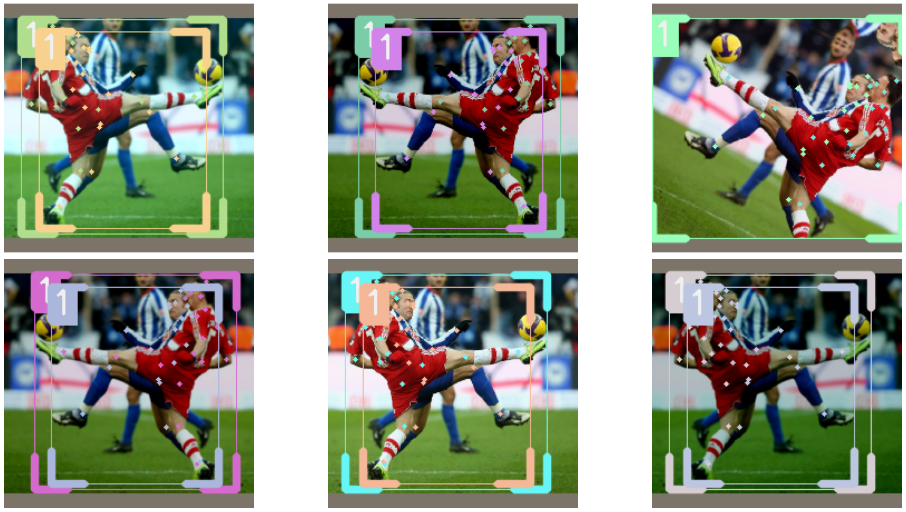
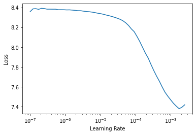
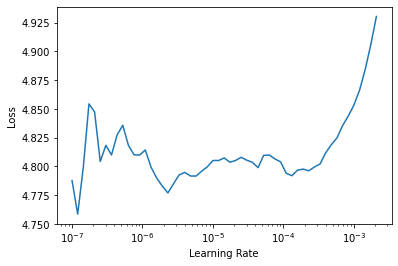
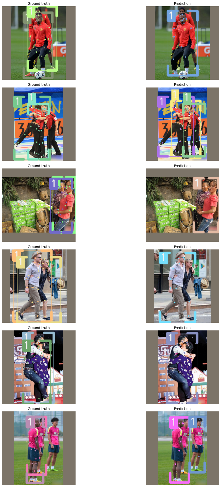
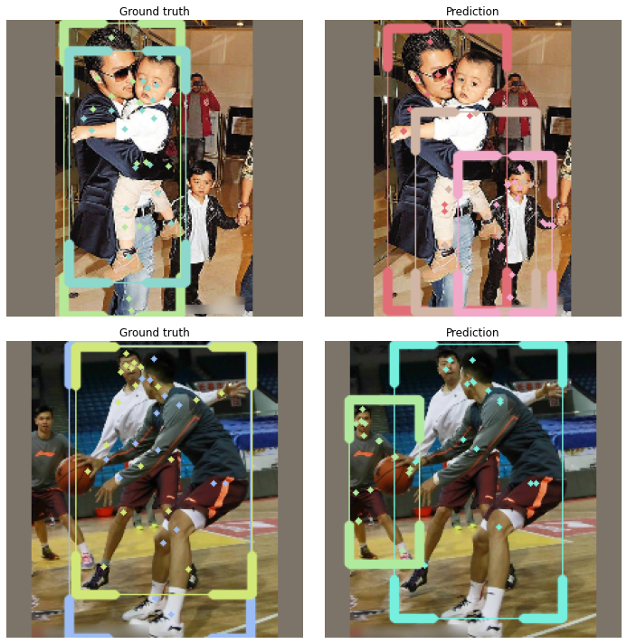

OCHuman dataset
From the OCHuman repo:
This dataset focus on heavily occluded human with comprehensive annotations including bounding-box, humans pose and instance mask. This dataset contains 13360 elaborately annotated human instances within 5081 images. With average 0.573 MaxIoU of each person, OCHuman is the most complex and challenging dataset related to human. Through this dataset, we want to emphasize occlusion as a challenging problem for researchers to study.
Installing IceVision
!pip install git+git://github.com/airctic/icevision.git#egg=icevision[all] --upgrade -q
!pip install git+git://github.com/airctic/icedata.git -q
from google.colab import drive
drive.mount('/content/gdrive')
Drive already mounted at /content/gdrive; to attempt to forcibly remount, call drive.mount("/content/gdrive", force_remount=True).
Defining OCHuman parser
from icevision.all import *
_ = icedata.ochuman.load_data()
[1m[1mINFO [0m[1m[0m - [1m
MANUALLY download AND unzip the dataset from https://cg.cs.tsinghua.edu.cn/dataset/form.html?dataset=ochuman.
You will need the path to the `ochuman.json` annotations file and the `images` directory.
[0m | [36micedata.datasets.ochuman.data[0m:[36mload_data[0m:[36m11[0m
Parse data
parser = icedata.ochuman.parser("/content/gdrive/My Drive/icevision/OCHuman/ochuman.json",
"/content/gdrive/My Drive/icevision/OCHuman/images/images/")
train_records, valid_records = parser.parse(data_splitter=RandomSplitter([0.8, 0.2]),
cache_filepath="/content/gdrive/My Drive/icevision/OCHuman/ochuman.pkl")
[1m[1mINFO [0m[1m[0m - [1mLoading cached records from /content/gdrive/My Drive/icevision/OCHuman/ochuman.pkl[0m | [36micevision.parsers.parser[0m:[36mparse[0m:[36m115[0m
Datasets + augmentations
presize = 384
size = 224
valid_tfms = tfms.A.Adapter([*tfms.A.resize_and_pad(size), tfms.A.Normalize()])
train_tfms = tfms.A.Adapter([*tfms.A.aug_tfms(size=size, presize=presize, crop_fn=None), tfms.A.Normalize()])
train_ds = Dataset(train_records, train_tfms)
valid_ds = Dataset(valid_records, valid_tfms)
samples = [train_ds[1] for _ in range(6)]
show_samples(samples, ncols=3)

len(train_ds), len(valid_ds)
(4064, 1017)
Dataloaders
train_dl = keypoint_rcnn.train_dl(train_ds, batch_size=32, num_workers=4, shuffle=True)
valid_dl = keypoint_rcnn.valid_dl(train_ds, batch_size=32, num_workers=4, shuffle=False)
Model
model = keypoint_rcnn.model(num_keypoints=19)
Downloading: "https://download.pytorch.org/models/keypointrcnn_resnet50_fpn_coco-fc266e95.pth" to /root/.cache/torch/hub/checkpoints/keypointrcnn_resnet50_fpn_coco-fc266e95.pth
HBox(children=(HTML(value=''), FloatProgress(value=0.0, max=237034793.0), HTML(value='')))
Train a fastai learner
learn = keypoint_rcnn.fastai.learner(dls=[train_dl, valid_dl], model=model)
learn.lr_find()
SuggestedLRs(lr_min=0.0001737800776027143, lr_steep=0.0002290867705596611)

learn.fine_tune(5, 1e-4, freeze_epochs=3)
| epoch | train_loss | valid_loss | time |
|---|---|---|---|
| 0 | 6.535554 | 5.772009 | 25:12 |
| 1 | 5.475295 | 5.279093 | 17:55 |
| 2 | 5.220623 | 5.119839 | 14:52 |
| epoch | train_loss | valid_loss | time |
|---|---|---|---|
| 0 | 4.984282 | 4.943438 | 19:19 |
| 1 | 4.936190 | 4.892380 | 19:38 |
| 2 | 4.886095 | 4.841107 | 18:31 |
| 3 | 4.821804 | 4.805563 | 17:05 |
| 4 | 4.787708 | 4.789882 | 16:31 |
learn.lr_find()
SuggestedLRs(lr_min=2.2908675418875645e-07, lr_steep=1.0964781722577754e-06)

learn.fine_tune(5, 1e-5, freeze_epochs=0)
| epoch | train_loss | valid_loss | time |
|---|---|---|---|
| 0 | 4.794446 | 4.788306 | 15:49 |
| 1 | 4.798432 | 4.785392 | 15:11 |
| 2 | 4.771396 | 4.779112 | 15:45 |
| 3 | 4.787804 | 4.784240 | 15:03 |
| 4 | 4.783122 | 4.780210 | 15:31 |
Show model results
keypoint_rcnn.show_results(model, valid_ds)

Save model
torch.save(model.state_dict(), "/content/gdrive/My Drive/icevision/OCHuman/model.pth")
model = keypoint_rcnn.model(num_keypoints=19)
state_dict = torch.load("/content/gdrive/My Drive/icevision/OCHuman/model.pth")
model.load_state_dict(state_dict)
<All keys matched successfully>
Running inference on validation set
infer_dl = keypoint_rcnn.infer_dl(valid_ds, batch_size=8)
samples, preds = keypoint_rcnn.predict_dl(model=model, infer_dl=infer_dl)
HBox(children=(HTML(value=''), FloatProgress(value=0.0, max=128.0), HTML(value='')))
preds[1]
show_preds(samples=samples[68:70], preds=preds[68:70], show=True, display_label=False, figsize=(10, 10))
{'above_threshold': tensor([True]),
'bboxes': [<BBox (xmin:56.87401580810547, ymin:11.817001342773438, xmax:175.61013793945312, ymax:219.280029296875)>],
'keypoints': [<KeyPoints (19 visible keypoints)>],
'keypoints_scores': array([[ 6.3175044 , 4.77172 , 5.2034507 , 6.2616506 , 5.187912 ,
5.0277104 , 4.90092 , 2.5671883 , -0.09820518, 4.783924 ,
2.211214 , -0.6368867 , 8.511393 , 9.750954 , 10.703004 ,
9.765849 , 12.346814 , 10.481525 , 10.295473 ]],
dtype=float32),
'labels': array([1]),
'scores': array([0.9997154], dtype=float32)}
